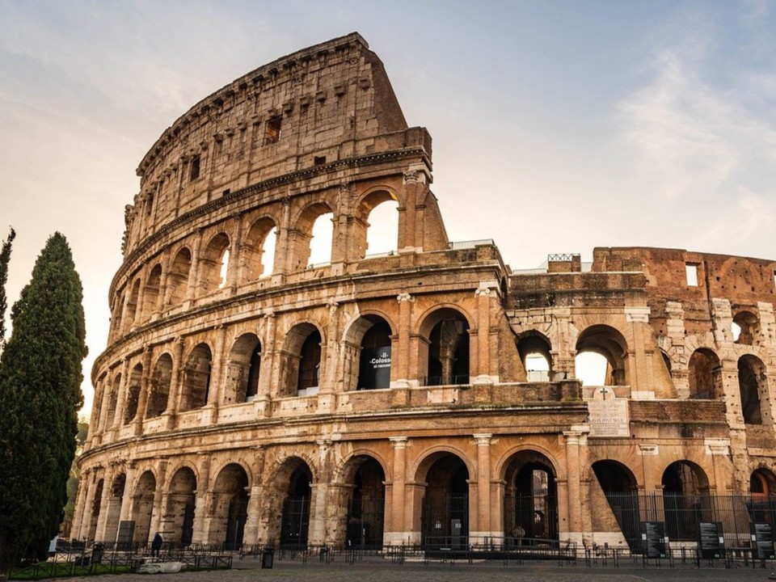
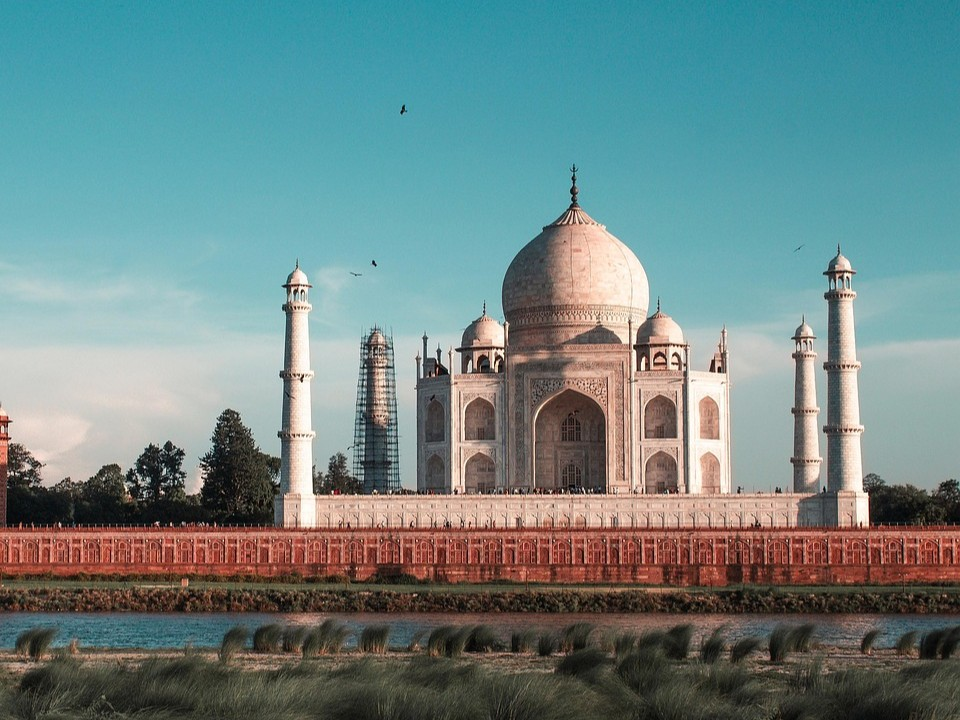
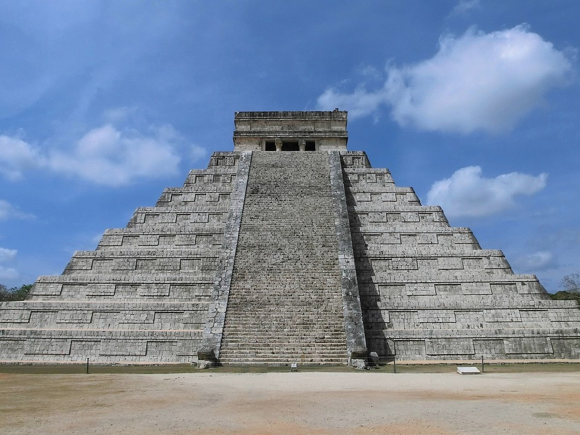
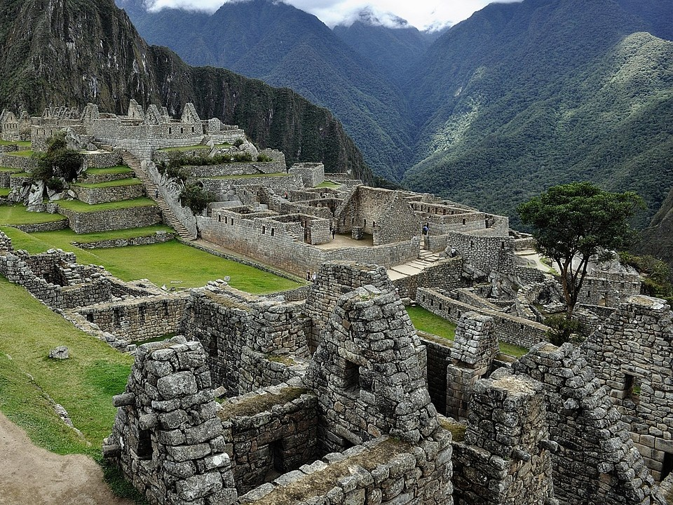
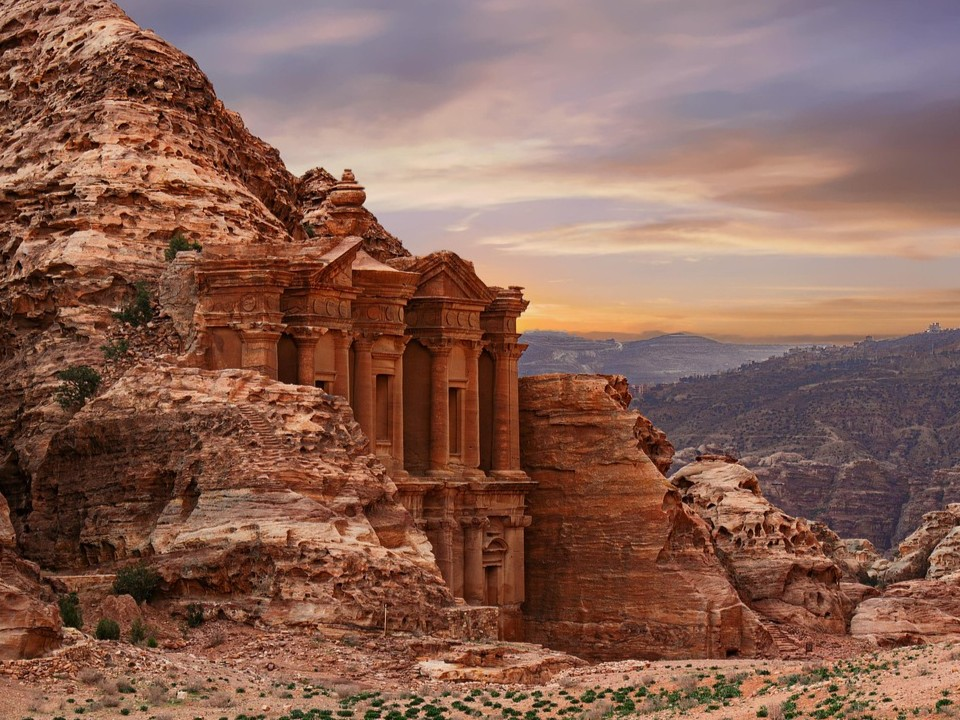
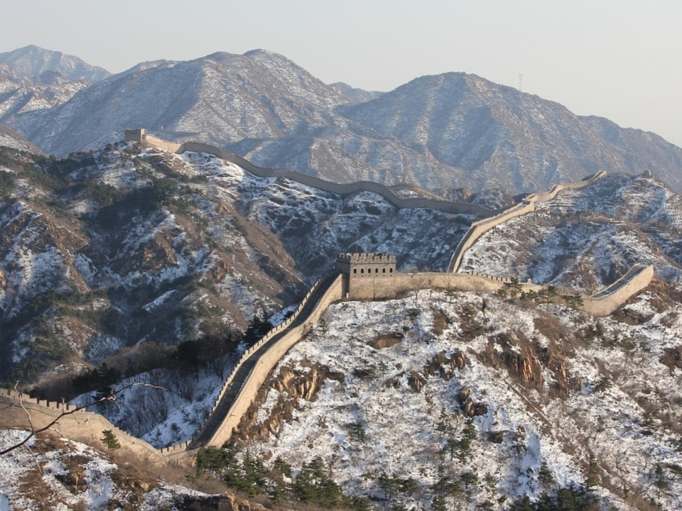
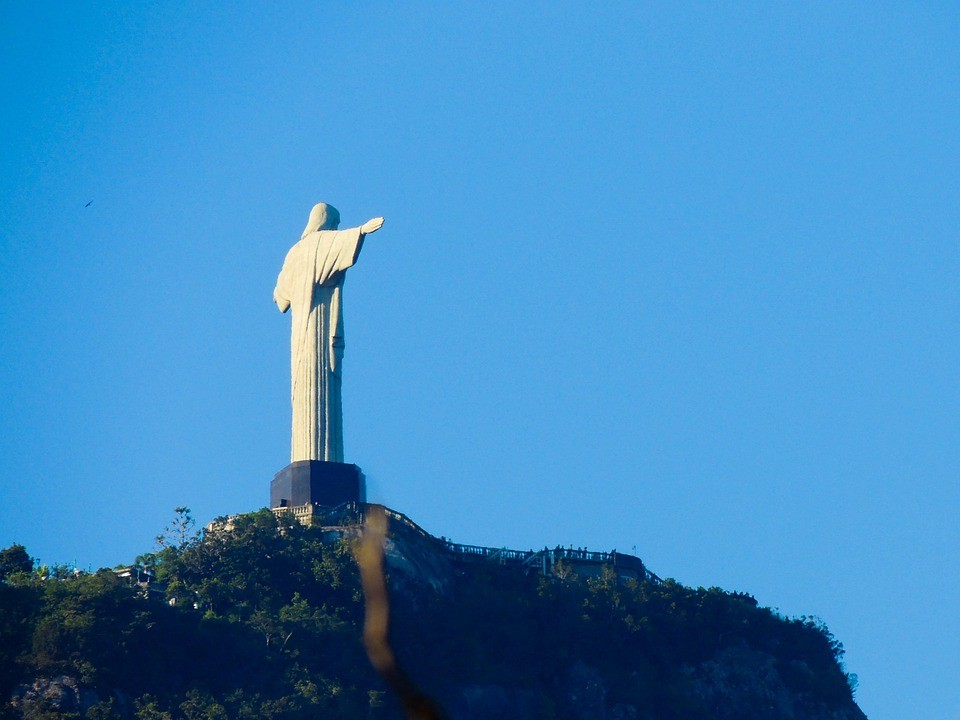

Новые семь чудес света
«Новые семь чудес света» — проект, целью которого стал поиск, популяризация и сохранение современных семи чудес света и выдающихся рукотворных и природных объектов по всему миру.
Колизей
Крупнейший амфитеатр Древнего Рима, построенный в 72–82 годах н. э. для проведения гладиаторских боёв и других публичных зрелищ.
Он мог вмещать до 80 000 зрителей, а его строительство финансировалось трофеями из Иерусалима.
Колизей, переживший века, остаётся символом имперского величия и образцом римской архитектуры.
- Особенности: Крупнейший в мире амфитеатр, где проводились бои и даже инсценировки морских сражений.
- Сложная конструкция: Подземный лабиринт (гипогей) использовался для подготовки к представлениям.
Тадж-Махал
Этот мавзолей из белого мрамора в Агре, Индия, был построен в 1632–1653 годах императором Шах-Джаханом в память о его любимой жене Мумтаз-Махал.
Тадж-Махал считается вершиной могольской архитектуры, в которой сочетаются персидские, исламские и индийские стили.
Его белый мрамор инкрустирован полудрагоценными камнями и меняет оттенок в зависимости от освещения.
- Особенности: Символ вечной любви с почти идеальной симметрией.
- Меняет цвет: Оттенок мрамора меняется в разное время суток.
Чичен-Ица
Древний город цивилизации майя на полуострове Юкатан в Мексике.
Наиболее известная постройка — пирамида Кукулькана.
Город был важным политическим и коммерческим центром и сочетал в своей архитектуре стили майя и тольтеков.
- Особенности: Пирамида Кукулькана, астрономическая обсерватория и священные колодцы-сеноты.
- Акустический эффект: Эхо от хлопка напоминает крик священной птицы.
Мачу-Пикчу
Город инков в Андах, построенный в XV веке.
Его точное назначение до сих пор неясно. Инки строили, используя полигональную кладку без раствора, что обеспечило устойчивость к землетрясениям.
Город был заброшен после прихода испанцев и вновь открыт лишь в 1911 году.
- Особенности: Построен без раствора с использованием полигональной кладки.
- "Затерянный город": Был вновь открыт в 1911 году.
Петра
Древний город набатеев в Иордании, высеченный в скалах.
Важный торговый центр в I веке до н. э. Самые известные сооружения — сокровищница Эль-Хазне и монастырь Ад-Дейр.
Уникальная система водоснабжения позволяла городу процветать в засушливом климате.
- Особенности: Фасады вырезаны прямо в скалах, сложная система водоснабжения.
- "Розовый город": Назван так из-за цвета песчаника.
Великая Китайская стена
Система оборонительных укреплений на северных границах Китая, строившаяся на протяжении столетий.
Состоит из множества отдельных участков, общая протяжённость которых превышает 20 000 километров.
Стена стала символом китайской цивилизации.
- Особенности: Одно из самых грандиозных рукотворных сооружений.
- Длительное строительство: Строилась разными династиями на протяжении столетий.
Статуя Христа-Искупителя
Статуя Иисуса Христа на горе Корковаду в Рио-де-Жанейро, Бразилия.
Завершена в 1931 году и стала символом города.
Каркас из железобетона облицован мыльным камнем.
- Особенности: Расположена на вершине горы, возвышаясь над городом.
- Символ: Является символом Рио-де-Жанейро и Бразилии.
Современный выбор человечества
| Чудо | Страна | Год создания | История |
|---|---|---|---|
| Колизей | Италия | Около 70–82 гг. н. э. | Крупнейший амфитеатр Древнего Рима, построенный императорами Флавиев для гладиаторских боев, публичных казней и других зрелищ. |
| Тадж-Махал | Индия | 1632–1653 гг. | Беломраморный мавзолей-мечеть, построенный императором Шах-Джаханом в память о жене Мумтаз-Махал. Шедевр архитектуры стиля Мугал, символ вечной любви. |
| Чичен-Ица | Мексика | Около 600 г. н. э. | Древний город майя на полуострове Юкатан, который был важным политическим и коммерческим центром. Наиболее известна пирамида Кукулькана. |
| Мачу-Пикчу | Перу | Около 1450 г. н. э. | Город инков, построенный на горном хребте в Андах. Использовался как резиденция императора или священное место, был заброшен после прихода испанцев. |
| Петра | Иордания | С 4 в. до н. э. | Древний город набатеев, высеченный в скалах. Важный торговый центр, который был «потерян» для западного мира до XIX века. |
| Великая Китайская стена | Китай | С 7 в. до н. э., основная часть — 1368–1644 гг. (династия Мин) | Система оборонительных укреплений, строившихся для защиты северных границ Китая. Самое длинное рукотворное сооружение в мире. |
| Статуя Христа-Искупителя | Бразилия | Около 1922–1931 гг. | Статуя Иисуса Христа на горе Корковаду в Рио-де-Жанейро. Стала символом города и страны. |